NAT: Network Address Translation
Motivation: IPv4 Address Exhaustion
Recall that we only have \(2^{32}\) different IPv4 addresses, which is not enough to address every host on the Internet. We’ve already seen that IPv6 is a robust solution to IPv4 address exhaustion, but IPv6 adoption has been fairly slow.
In the meantime, to conserve addresses, recall that IANA allocated special RFC 1918 ranges of private IP addresses, which can be used by any networks that don’t require Internet addresses: 192.168.0.0/16, 10.0.0.0/8, and 172.16.0.0/12. It turns out that these addresses are often used in your home network as well, so that your own personal device doesn’t need a unique IP address. But, you do need Internet access, so how can you use a private IP address?
NAT: Conceptual
In NAT, the goal is to use a single public IP address to represent many hosts in the local network. The trick is to have the gateway router convert private IP addresses into the single public address before sending out messages. Then, the router converts the public address back into a private address for incoming replies.
Alice, Bob, and Chuck are all working for Joe’s Tire Shop. They have private IP addresses A, B, and C, which cannot be used on the wide Internet, because they’re not unique. Instead, everyone in Joe’s Tire Shop must share a single public IP address, which is the only unique, publicly-understandable IP address they have.
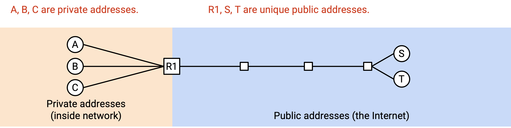
Alice wants to send a message to an external public server with public IP address S. She sends a packet that says “From: A, To: S.” If we sent this packet naively, S would be unable to send replies, because A is a private IP address.
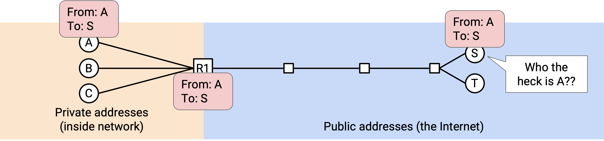
Instead, when the packet reaches the gateway router, it rewrites the header to say “From: R1, To: S.” The router also makes a note: If I get any replies from S, they should go to A.
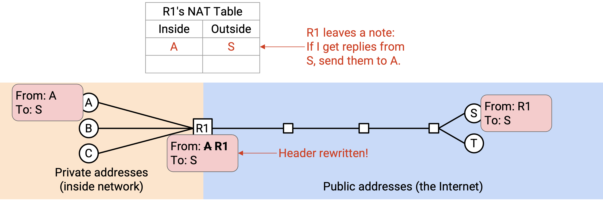
Now, when S gets a packet, it can send replies to the public address R1: “From: S, To: R1.” When R1, the gateway router, receives the reply, it checks its note, and rewrites the header to say “From: S, To: A.” Then, the packet gets sent back to A.
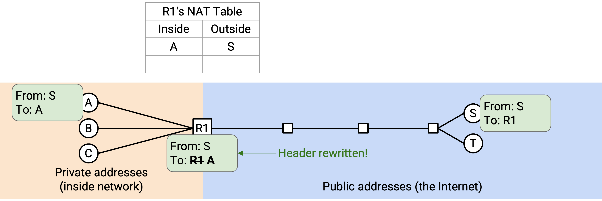
Now, Alice, Bob, and Chuck can all send outgoing packets. When the router receives a packet, it must remember a mapping between the external destination and the internal sender. (“B just sent a packet to N, so any replies from N should be sent back to B.”)
One problem arises if Alice and Bob both want to talk to S.
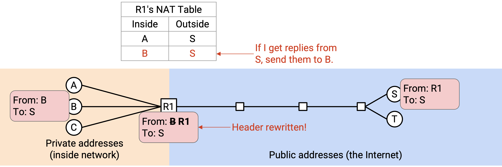
We now have ambiguity if a reply arrives from S. Should the router send this reply to A or B?
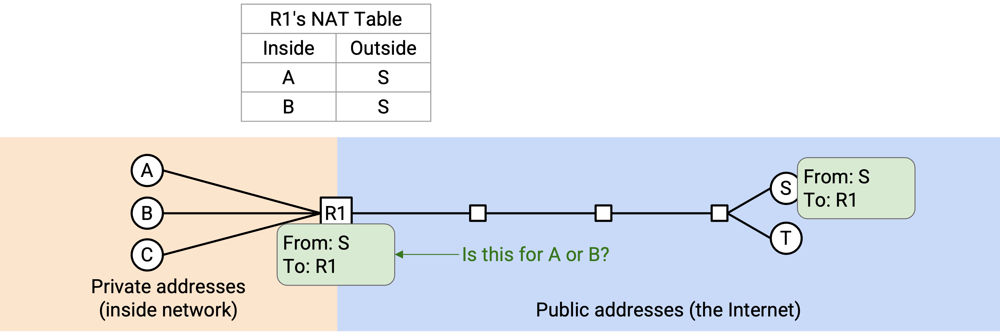
We can solve this problem by using logical ports, from Layer 4. Alice’s connection says: “From: A, Port 50000, To: S, Port 80.” The router rewrites this to say “From: R1, Port 50000, To: S, Port 80,” just like before. The note now says, if I get any replies from S, Port 80, to R1, Port 50000, it should go to A.
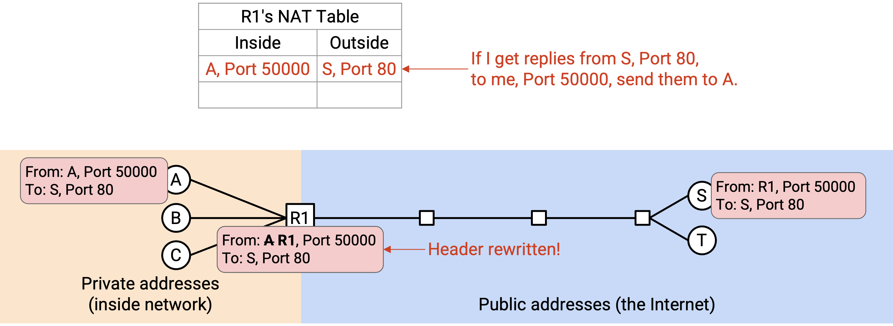
Bob could create a separate connection that says: “From B, Port 60000, To: S, Port 80.” The router rewrites this to say “From: R1, Port 60000, To: S, Port 80,” just like before. The note for this connection says, if I get any replies from S, Port 80 to R1, Port 60000, it should to go B.
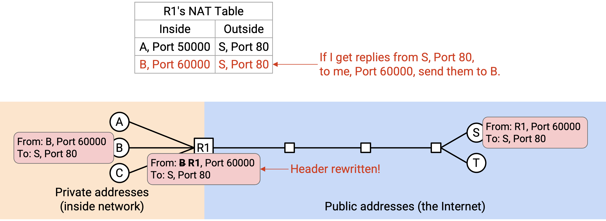
More generally, the router is now keeping track of connections using the 5-tuple of source IP, destination IP, protocol, source port, and destination port. When the router receives an outgoing packet, it changes the private source IP to the public source IP, and makes a note of the 5-tuple. Then, when the router receives an incoming packet, it looks up which connection the packet belongs to, and sends the packet to the appropriate client (with their private IP).
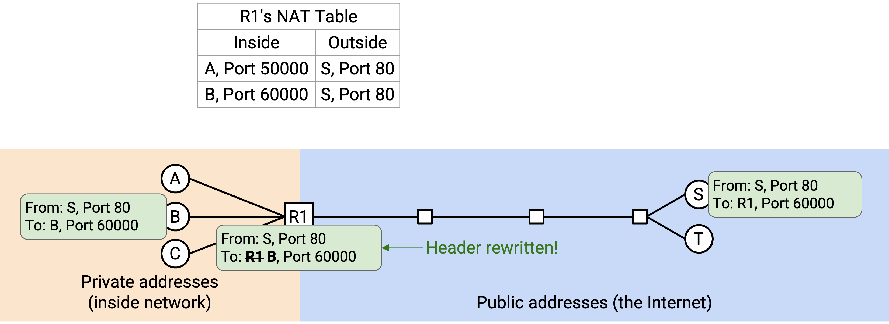
Rewriting Client Port Numbers
We have one last issue: What if, instead of Port 50000 and Port 60000, Alice and Bob both chose the same port number (e.g. Port 50000)?
Now, the router remembers two connections: (A Port 50000 to S Port 80), and (B Port 50000 to S Port 80). If the router receives an incoming packet “From: S, Port 80, To: R1 Port 50000,” it’s ambiguous whether this packet was from A or B’s connection.
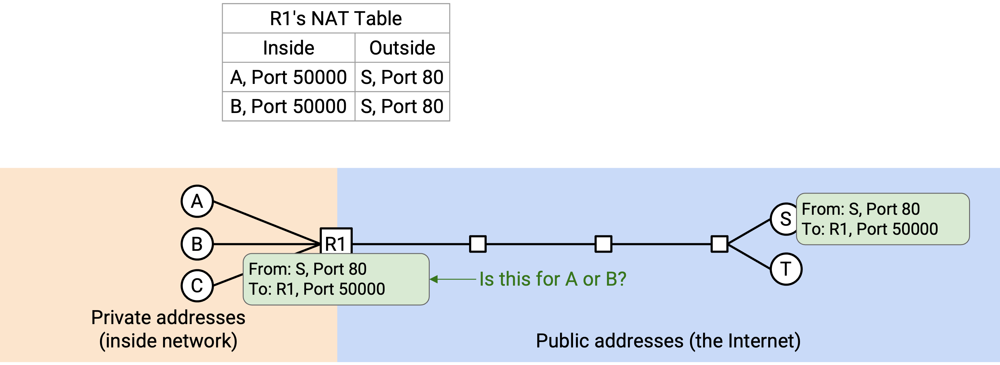
The last fix we have to make is to also allow the router to rewrite the port number. When Bob sends “From: B, Port 50000, To: S, Port 80,” the router realizes that someone else already has a connection using Port 50000, to S Port 80. Therefore, the router makes up a “fake” port number for Bob (let’s use 60000) and rewrites both the source IP and source port to get: “From: R1, Port 60000, To: S, Port 80.”
As before, the router remembers the active connection (A Port 50000 to S Port 80), but for Bob, the router additionally notes the fake port number: (B Port 50000, faked as 60000, to S Port 80).
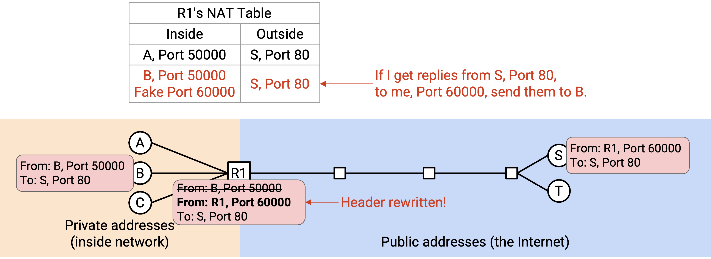
Now, if the router receives an incoming packet “From: S, Port 80, To: R1, Port 50000,” this must be for Alice. By contrast, an incoming packet like “From: S, Port 80, To: R1, Port 60000,” with the fake port number, this must be for Bob.
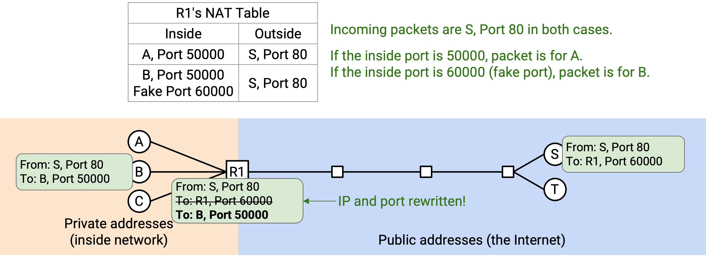
Note that Bob has no idea that the router is changing his port number. When the router forwards this packet back to Bob, the fake port number must be changed back to the original port number. “From: S, Port 80, To: R1, Port 60000” must be rewritten as “From: S, Port 80, To: R1, Port 60000.” More generally, none of the private clients should need to know or care about their packets getting rewritten. The router should be giving all of them the illusion that they’re sending and receiving packets from their private IP address and whatever ports they choose.
NAT: Implementation
When a home router connects to the ISP for the first time, it can run DHCP to receive an IP address. (Earlier, we talked about hosts running DHCP, but routers can also run DHCP.) The ISP’s DHCP server replies and allocates a single IP address to the home router. This is the single public address that all the hosts in this router’s home network will be sharing.
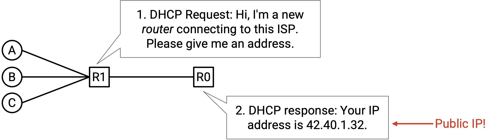
There are several different modes of NAT. The one we just saw is called Port Address Translation (PAT), and it gives us the ability to introduce the fake port numbers that we saw. The PAT mode requires routers to be aware of Layer 4 protocols, so that they can parse the packets, keep track of connections, and rewrite headers.
PAT is the most complex and widely-used mode of NAT, but simpler modes of NAT also exist for one-to-one address translation. If every host actually had their own IP address, but they sent packets from private addresses, the router could just do a one-to-one translation, mapping 10.0.0.1 (private) to 42.0.2.1 (public), and 10.0.0.2 (private) to 42.0.2.2 (public), and so on. This simpler mode wouldn’t let us conserve IP addresses by hiding multiple hosts behind a single public address, but it can still be useful in other situations.
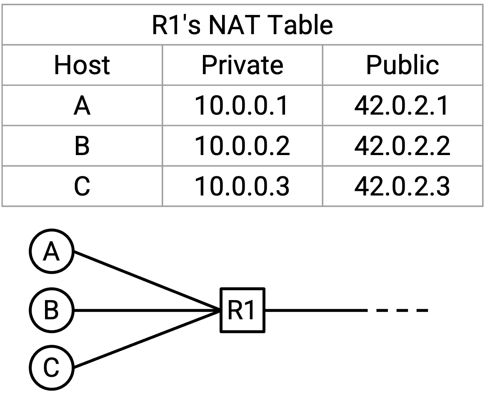
Where is NAT Used?
NAT increases the complexity of packet forwarding for the router. The router must now be able to parse the Layer 4 header, in addition to the Layer 3 header. Also, the router must be able to rewrite the Layer 3 and Layer 4 headers. Finally, the router must maintain a connection state table to keep track of all the flows passing through the router. All this functionality increases the number of CPU cycles needed to forward each packet, and also increases the amount of memory needed on the router per flow.
Because NAT increases router complexity, it is performed as close to the edge of the network as possible, in order to limit the number of flows passing through the router. Running NAT on your home router is a good idea, since there aren’t too many devices in your home that will send connections through the home router. By contrast, running NAT on a high-performance datacenter router would be a bad idea.
In practice, small-scale NAT is used in almost every personal (home/office) network for IPv4, even today. As IPv4 addresses ran out, ISPs were unable to give one public address to each customer (i.e. each home router). As a result, the ISP network itself also had to run a more complex version of NAT called Carrier Grade NAT (CGNAT). This version of NAT is deployed deeper in the network, and requires routers to keep track of many more connections.
Note that we generally don’t use NAT for IPv6, because there are enough IPv6 addresses to assign a unique public one to every computer in the world.
Inbound Connections
So far, we’ve assumed that connections are always initiated by the client with the private IP address. In other words, the first packet is always outgoing, from client to server. This is consistent with how most home networks operate. When you load a website in your browser, you’re the client initiating the connection. It’s generally not the case that others are trying to connect to you.
But, what if you were running a server, and you did want people from the outside world to be able to initiate connections to this server? Users from the outside can’t send packets to a private IP address. They could try to send packets to the router’s IP address, but if the router gets a packet like “From: outside user, To: R1, Port 28,” the router has no idea which of the private clients to forward this packet to. This is the very first packet of a new connection, so the router’s table has no information about this connection yet.
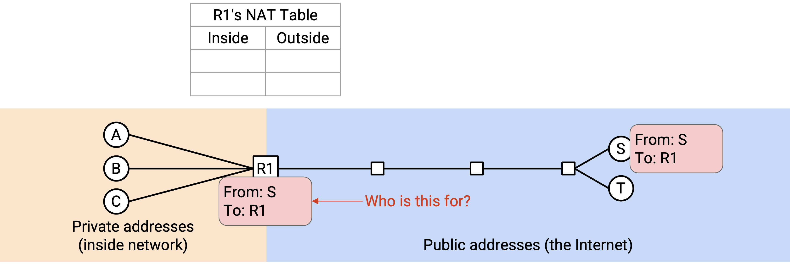
To allow inbound connections, routers performing NAT need a port mapping table. Alice, who is inside the network and only has a private IP address, tells the router: I’m going to run a new server, and listen for requests on Port 28. Now, if the router sees some packet from an outside user to R1, Port 28, the router knows to forward this packet to Alice.
Entries in this port mapping table may need to be specified manually (e.g. Alice manually configuring the router). Dynamic protocols such as UPnP (Universal Plug-n-Play) and NAT-PMP (NAT Port Mapping Protocol) allow for dynamic configuration of open ports. These protocols are sometimes used by applications like online gaming, where inbound connections are needed.
Security Implications of NAT
NAT breaks the end-to-end principle. So far, we’ve said that with Layer 3, anybody on the Internet can reach anyone else. However, because NAT doesn’t allow inbound connections by default, users in a home network, who only have a private IP address and are sharing a public IP address, cannot be reached automatically. They’d need to configure the router before they can accept inbound packets.
NAT has the property that it doesn’t allow inbound connections by default. This could be viewed as a security feature, though it’s more of a side effect than an intentional design feature. NAT causes inbound connections to be blocked by default, which might be useful for stopping attackers from trying to connect to hosts inside the network. This behavior is actually pretty similar to firewalls (see UC Berkeley CS 161 notes for more information), which also often block inbound connections by default. That said, this is mostly a coincidence, so NAT isn’t really implementing a principled security policy, and shouldn’t be thought of as a bulletproof defense.
NAT also has the side effect that it can help preserve client privacy. Again, this isn’t really an intentional security feature. Because the router rewrites the client’s IP address, when the server receives a packet, it doesn’t know the original sender’s identity (could be Alice, Bob, or Chuck).
By contrast, if we didn’t use NAT, the server can learn the exact identity of the sender. Also, if we didn’t use NAT and we used IPv6, the server might be able to learn the exact computer the sender is using, since IPv6 addresses are sometimes auto-configured using the MAC address (copying MAC address bits into the IP address). If we were using IPv6 and still wanted client privacy, some alternate solutions like IPv6 temporary/privacy addresses do exist.